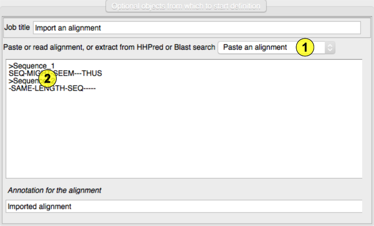
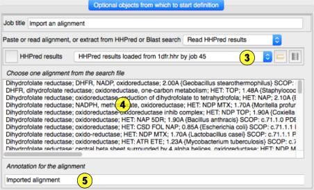

Import an alignment, probably for use in molecular
replacement, either by cut-n-paste or selecting a file. Various
alignment formats can be recognised and read: clustal, pir, fasta,
stockholm and phylip. See the Model Data documentation
for description of these files. Beware that text from
word processors or web pages may contain other formatting that
makes them unreadable.
The task can also read the search result files from HHPred or
Blast servers that usually contain multiple alignments. Beware
that only the XML Blast files can be read - the text output is
too variable. Beware that search hits do not necessarilly
include the full sequence of the target or the hot structure -
they only show the common fragments but these are what are
required by the model editing programs (Chainsaw and Sculptor). Choose the mode of import from the menu offering past or read
an alignment or read a Blast or HHPred search file.(1) Paste an alignment here.(2) If you select a Blast or HHPred file(3) the search hits are listed here and you must select one.(4)Holding the mouse over a hit will display
the alignment in a popup. You can also enter or edit the
annotation applied to the alignment.(5)Input

